|
|
Home | About | Reviews | Articles | Contact |
| Jammu and Kashmir is a region administered by India as a union territory and consisting of the southern portion of the larger Kashmir region, which has been the subject of a dispute between India and Pakistan since 1947, and between India and China since 1962. The Line of Control separates Jammu and Kashmir from the Pakistani-administered territories of Azad Kashmir and Gilgit-Baltistan in the west and north. It lies to the north of the Indian states of Himachal Pradesh and Punjab and to the west of Ladakh, which is also subject to the dispute as a part of Kashmir, and administered by India as a union territory. Provisions for the formation of the union territory of Jammu and Kashmir were contained within the Jammu and Kashmir Reorganisation Act, 2019, which was passed by both houses of the Parliament of India in August 2019. The act re-constituted the former state of Jammu and Kashmir into two union terrories, Jammu and Kashmir and Ladakh, with effect from 31 October 2019. |
| 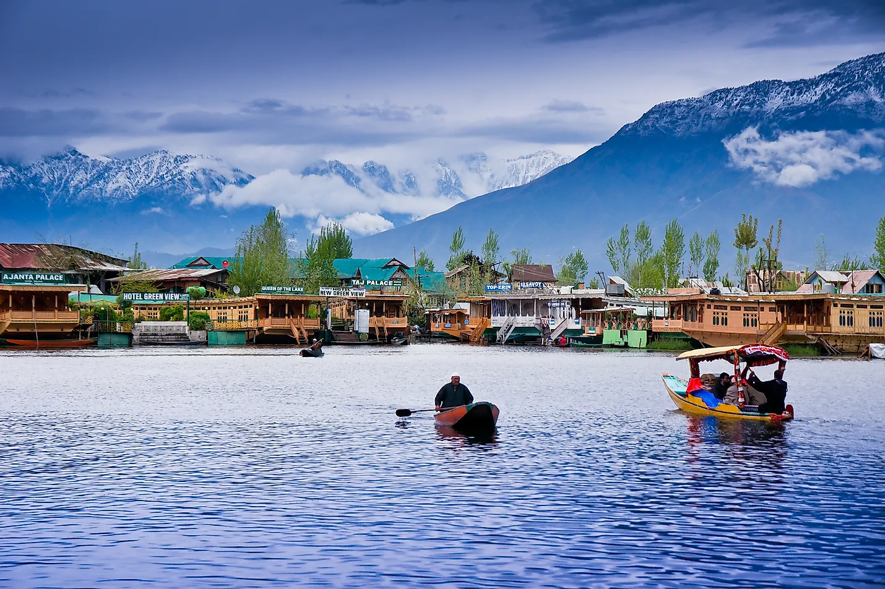 | The state of Jammu and Kashmir was accorded special status by Article 370 of the Constitution of India. In contrast to other states of India, Jammu and Kashmir had its own constitution, flag and administrative autonomy. Indian citizens from other states were not allowed to purchase land or property in Jammu and Kashmir. Jammu and Kashmir had three distinct areas: Hindu-majority Jammu region, Muslim-majority Kashmir Valley and Buddhist-dominated Ladakh. Unrest and violence persisted in the Kashmiri Valley and, following a disputed state election in 1987, an insurgency persisted in protest over autonomy and rights.The Bharatiya Janata Party (BJP) came to power in the 2014 Indian general election and five years later included in their 2019 election manifesto the revocation of Article 370 of the Constitution of India, in order to bring Jammu and Kashmir to equal status with other states. |
|
Content: Culture & Tradition Best Places To Explore Live .Love .Eat Best Things To Do |

| The culture of Kashmir is a blend of multiple customs and came from Northern India, Northern Pakistan and the Chinese territory of Aksai Chin. The state enjoys the presence of mix religions and that’s why Kashmir is famous for its cultural heritage. It amalgamates Hindu, Sikh, Muslim and Buddhist people who make Kashmir more beautiful by adopting their own culture that has brought many changes in their living style. According to the sources, Wazwan and their culture is highly influenced by Central Asian and Persian culture. Their dance, music, cuisine, carpet weaving and Koshur Sufiana forms a significant part of Kashmiri identity. Kashmiri culture is mainly followed by people living in Kashmir valley and Dodab of the Chenab region. The valley is known for the fine arts including traditional boats and houseboats, handicrafts and poetry. | 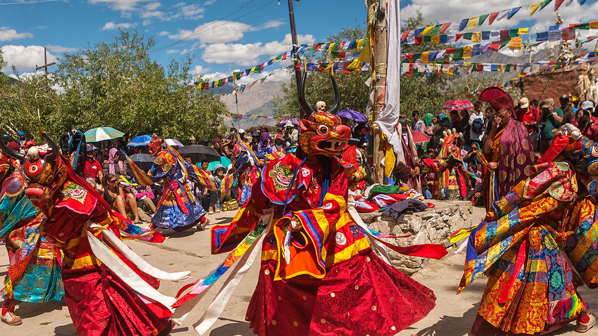 |

| 1. Srinagar | |
| Silk-sunset, certain shades of white, tar on the roads, gloom beyond the oil lamp floating over the lake, ripples in the water, fog on the mirror, garden of the spring, the palace of the fairies, subject of the poems, emptiness in the eyes, absence of words, forever in ordinary things and the old roses on a breeze, where love arrives in memories of forever to liberate us into life – Srinagar! The tourist places in Srinagar offer breathtaking views and mesmerising locations to die for.Srinagar wakes up with Fajr (pre –dawn prayers) and zikr where life sings winter melodies on nine bridges, connecting the city that smells of heaven on both sides of Jhelum River, a river that passes through the city, meanders through the valley, deepening into the traveler’s paradise – Dal Lake. | 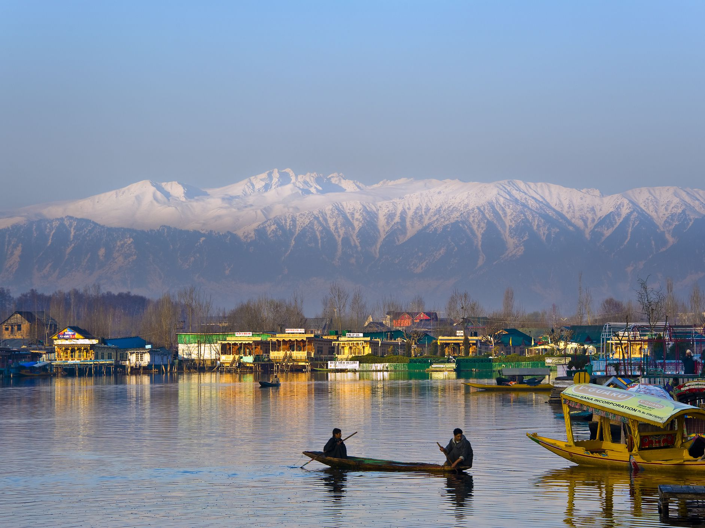 |
| 2. Gulmarg | |
| The nearest India can make to being a ski resort is via its pine-fringed Gulmarg. Situated at an elevation of 2730 meters above sea level, it well justifies the Meadow of Flowers tag that it has received. The meadow is given a visual highlight by the 1890s Anglican Church of St Mary’s that sits on a lonely hillock which can be accessed off the dead-end road that links the 1965 neo-colonial style Hotel Highlands Park to the historic Gulmarg Golf Club. However, the key reason to visit Gulmarg is just not the same. You must visit Gulmarg to explore the backing stands of the splendid mature pines traversing you to the elevation of bald Mt Afarwat. To make it to mountain, you can either trek on foot or take help from ponies at a meagre amount of INR 300 per hour. However, the easiest way out is using the two-stage gondola cable car that flutters you to 3747m. | 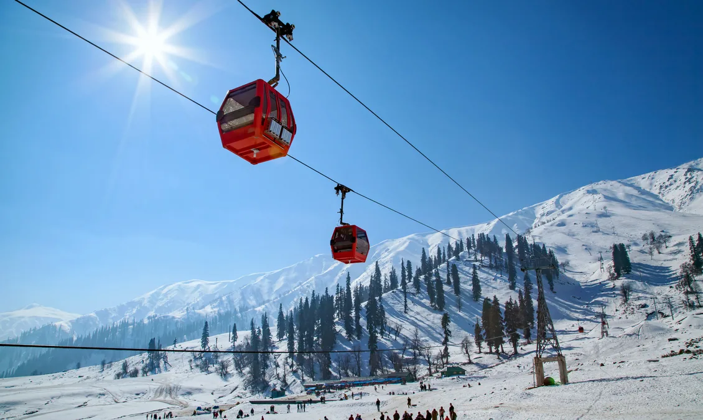 |
| 3. Sonamarg | |
| Sonmarg is a tiny town of Kashmir situated 9,000 kms above sea level at the bank of the gushing Sindh river. This picturesque town is located in Ganderbal district of Jammu and Kashmir and is just 70 km away from the Srinagar International Airport. The valley is the connecting point of a number of Himalayan peaks like Kolhoi peak, Amarnath peak, Sirbal Peak, and so on. The charming view of the place becomes more attractive with the wide varieties of flowers and alpine trees gracing this quaint town.Here you can enjoy, meadows of gold, sun-kissed peaks, breathtaking lakes and towering glaciers, all in one place. This beautiful himalayan town is full of mountain ranges and valleys to explore through trekking. It is a base camp for trekkers going to Ladakh and for many trekking routes to different lakes of Kashmir, such as Krishnasar Lake, Gadsar Lake, Vishansar Lake, and so on. During winter the valley covered with snow offers an oportunity to the tourist to enjoy sledding or skiing or snow fighting. | 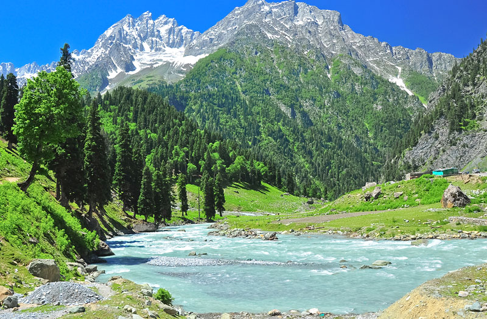 |
| 4. Pahalgam | |
| Amidst the Liddar Valley sits a picturesque destination in Kashmir – Pahalgam. It is located in the Anantnag district in Jammu at an elevation of 2740 metres above sea level. Popularly it is called the Valley of Shepherds. Also, it is one of the most sumptuous destinations in India and it must be on your bucket list when you chalk down the places to visit in Jammu and Kashmir.In the middle of tranquillity, you will surely find many out-of-the-world destinations too. Some of the stunning lakes such as Sheshnag Lake will surely take your breath away and beauteous pine trees will follow you wherever you go. If you are waiting for an adrenaline pump, you have plenty to look forward to on your trip to Pahalgam. Initiate trekking on a hill or climbing the Himalayas from a suitable summit and unleash all the adrenaline. If you visit this place in the right season, you will have one of the most remarkable skiing experiences as well. | 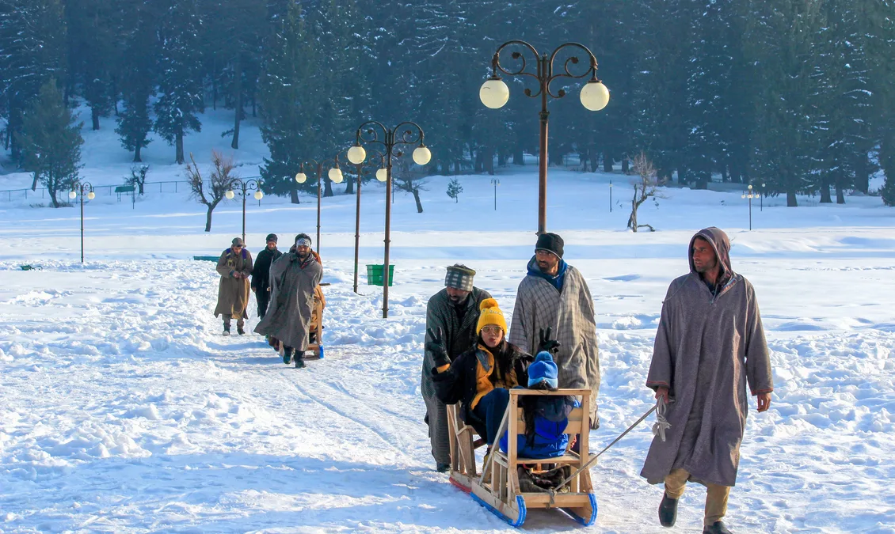 |
| 5. Dal Lake | |
| Known to be “The Jewel of Srinagar”, Dal Lake spreads across an area of around 26 square kilometers. Popular as one of the most spellbinding places to see in Srinagar, this hillside lake flaunts colorful Shikaras, traditional wooden houseboats, and floating markets. Tourists visiting Dal Lake love to take a ride in the beautiful Shikaras, which are basically wooden boats decorated beautifully with canopies overhead.They also enjoy shopping authentic Kashmiri items from the floating market or lake market. These markets lay amidst the lake and sell a number of items like saffron and handicrafts. The houseboats on Dal Lake feature floral motifs and intricate carvings and offer breathtaking sights of the majestic lake. These boats are equipped with single rooms and luxury suites and offer comfortable accomodation to the visitors. During the winter season, the visitors also enjoy ice skating on the frozen lake. | 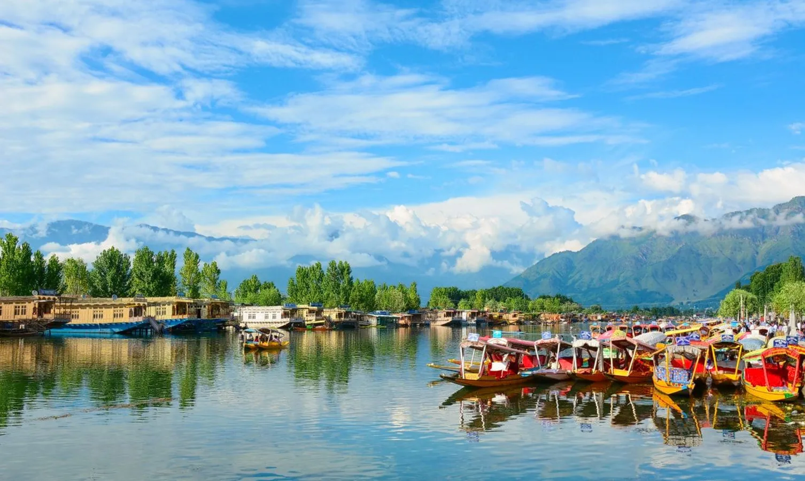 |

| 1. Mutton Rogan Josh | |
| Let us kick it off with some tender mutton. The Mutton Rogan Josh, like many other delicacies in the country, has a Mughal connection to it. With every bite, apart from a handful of meat, you will also taste some fried onions, fresh yoghurt, and the punch of loads of red chilli powder. If you wonder where the red tinge comes from, it is from the red chilli powder! The Rogan Josh will be the best introduction to the traditional food of Kashmir for you. | 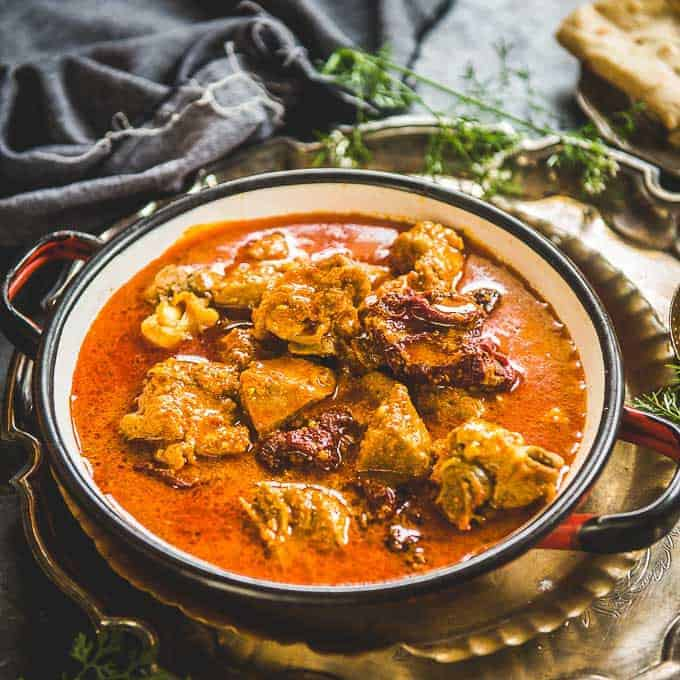 |
| 2. Chicken Pulao | |
| Don’t let the common name fool you. While in other parts of the country, you will find several versions of this dish, none will provide you with the same satisfaction as the Kashmiri one. The simplicity of the ghee rice with juicy pieces of chicken is what makes it a popular food of Kashmir.Pulao is a delicious dish made of basmati rice, meat or veggies, spices & herbs. This chicken pulao is super easy to make for a weeknight dinner. It is mildly spiced and not heavy like the Chicken biryani. Traditionally a Biryani is made by layering marinated meat and partially cooked rice. | 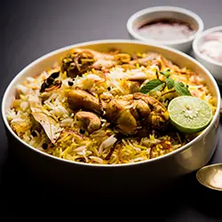 |
| 3. Kahva | |
| The Indian/Kashmiri variation of kahwah is made by boiling green tea leaves with local saffron, cinnamon, cardamom and occasionally Kashmiri roses. It is generally served with sugar or honey and crushed nuts, usually almonds or walnuts. Some varieties are made as a herbal infusion only—without the green tea leaves. Although not a dish, Kahva is an important part of Kashmiri cuisine. Whether you feel tired or are caught up in a festive mood, this tea-like beverage is the perfect accompaniment for all occasions. This herbal tea is brewed with saffron and a host of other spices, giving it a unique taste, one that you will remember for a long time. |  |
| 4. Modur Pulao | |
| Modur Pulao is a Kashmiri Sweet Pulao prepared using dry fruits and nuts. It is a delicious aromatic rice prepared using a surplus amount of ghee. It is a flavorful concoction of spices and nuts.A proper meal will be incomplete without something sweet. Hence, we bring to you the wonder that is Modur Pulao. Centred around saffron, the rice-based dish is adorned with dry fruits, servings of ghee and some milk. The sugar that goes into it provides that sweetness you feel in your mouth after a couple of spoonfuls. If you ask us, Modur Pulao at the end of your Kashmiri dining is a must! | 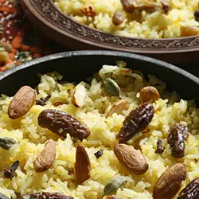 |
| 5. Sheermal | |
| Sheermal or Shirmal, is a saffron-flavored traditional flatbread from Greater Iran. The word sheermal is derived from the Persian words شیر meaning milk, and مالیدن meaning to rub. In a literal translation, sheermal means milk rubbed. We often have flatbread as a way to accompany the curry or side dish on our plate. But, here is a kind of bread that is a meal in itself. Sheermal is one of the famous Kashmiri dishes. The crispy yet sweet delight is bound to melt in your mouth as soon as you bite into it. And the best way to experience it is in Kashmir itself, with the locals. | 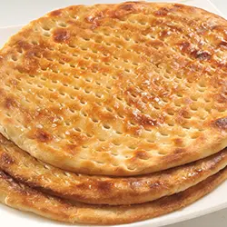 |

| 1. Houseboat Stay | |
| And it is not just the shikhara rides in Dal Lake, this is one of the best offbeat things to do in Srinagar. Spending a night at the houseboat docked at the Dal Lake jetty is also among the top things to do in Kashmir. Be it honeymooners, families, or solo travelers; a night stay at one of the houseboats in Srinagar is something that you simply can not miss. The houseboats have Wifi and airport transfer facilities available. You can also avail of the facilities of the meal provided by them. Houseboat stay facility in Jammu and Kashmir is the best to experience if you are here with your family, a group of friends, or with your partner. | 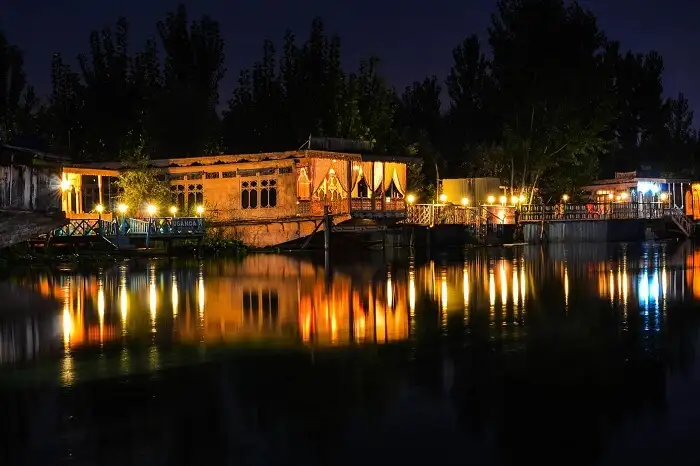 |
| 2. ‘Gondola’ Cable Car Ride | |
| Riding the Gondola cable car is one of the exciting and fun things to do in Kashmir for people of all ages. Tourists prefer to travel via cable car to enjoy the best views of the snowcapped mountains. Taking a Gondola ride is one of the best things to do in Kashmir in May because during this month, the summers are coming to an end and the view is really great.
The ride takes place in three phases. Phase 1: Gulmarg to Kongdoori Phase 2: Kongdoori to Apharwat Peak Phase 3: Kongdoori to Mary Shoulder |
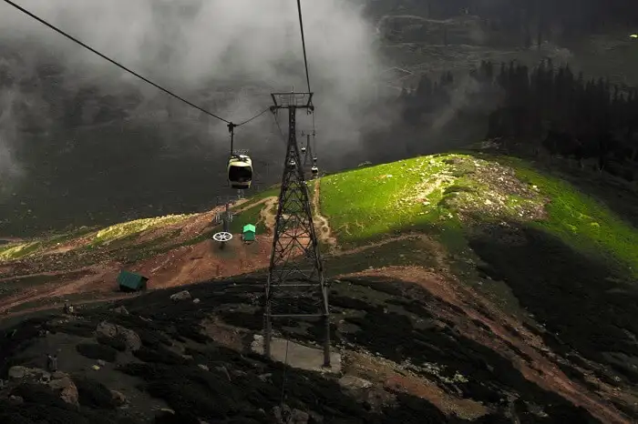 |
| 3. Shopping | |
| Shopping is one of the most common things to do in Kashmir. And no, I do not mean just antiques and other souvenirs. Tourists here can shop for exquisite Kashmiri handlooms and Pashmina shawls, antique copperware like samovars, Namda hand-woven carpets, local garments called Ferins, and expensive Doda Sapphire. And then there are flowers, fruits, and vegetables sold on the shikaras in Dal Lake. More than what you buy, how you buy will be the reason for your excitement here. Kashmir is a well-known place for Pashmina shawls and blankets. There would be hardly a few people who visit Kashmir and don’t buy Pashmina Shawls and Stoles | 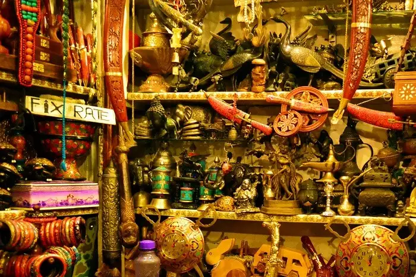 |
| 4. Pony Ride Excursions | |
| Pony riding or horse riding is a popular tourist’s activity in Kashmir. Tourists can find horse (ponies) in popular holiday resorts especially in those places where some roads are not motorable in highlands. Tourists hire ponies to carry out trekking activity in the highlands of the valley. Places like Gulmarg, Sonmarg, Pahalagam, Yusmarg in Kashmir valley, Patnitop, Sanasar, Kud in Jammu and Nubra Valley, Zanskar Valley, dras valley are the best known for pony riding. Pony is a common mode of transport in the valleys of Kashmir. Taking a short pony ride in the beautiful valleys is another interesting thing to do in Kashmir. Pony rides in Pahalgam, Sonamarg, Yusmarg, and Gulmarg are very popular. Pony rides are more common in places where transport cannot be motorized. Taking a pony ride is a great way to enjoy the real lifestyle of Jammu and Kashmir. | 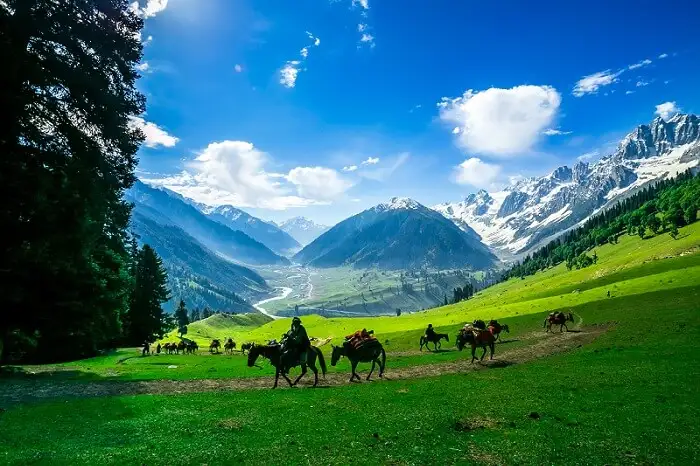 |
| 5. Old Srinagar Heritage Walk | |
| They say, walk more to know more. And the same is true with Srinagar. Taking a stroll is one of the best things to do in Srinagar. With some structures over 4 centuries old and gardens that are no less than a paradise, the city has an architecture that is influenced by 3 different styles and 3 different religions. Walking through the old town is one of the peaceful things to do in Kashmir. Visit the marvelous structures including Jamia Masjid featuring 370 pillars made of the Maple tree. Take a walk through the lanes of the old Srinagar that has old markets of spices, dry fruits and threads. | 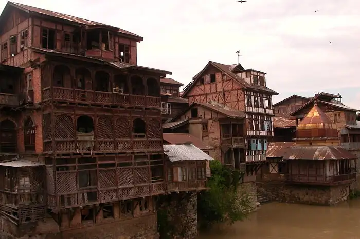 |